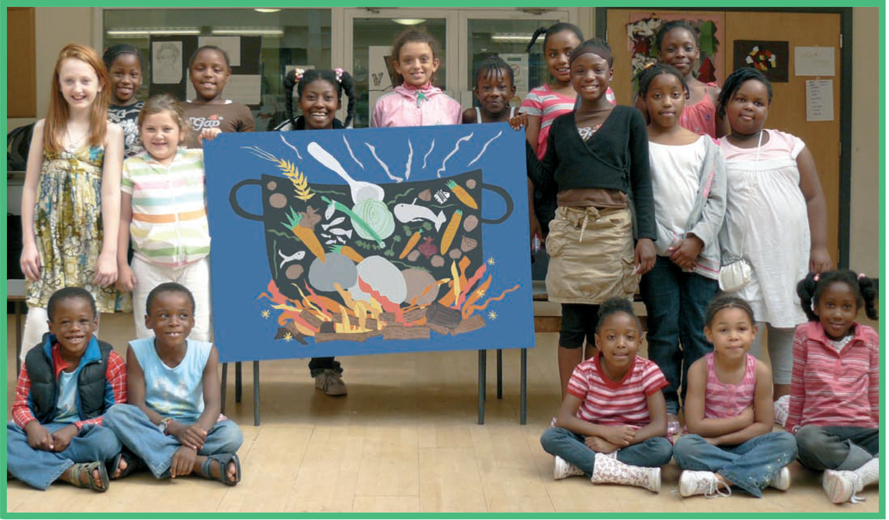

Credits

Story by Kevin Graal © 2008
Stone Soup is a traditional folktale found in many parts of the world. This web version of Stone Soup was created by Lara Dominguez. All content for this web version, including images and words were taken directly from a storybook, commissioned and distributed by Unilever to mark World Food Day, and to celebrate its partnership with the United Nations’ World Food Programme.

The pictures here and in the World Food Programme's storybook were created by children at the Blackfriars Settlement Summer Play Scheme in London during August 2008, working with storyteller Kevin Graal, and artists Bryan Holdsworth and Lucy Brennan-Shiel of artzero children’s art. Design by Bryan Holdsworth. Unilever supports the Blackfriars Settlement in its work with local people to help them achieve their economic, educational and social potential.
If you were touched by this story, go to www.wfp.org to find out more about how the World Food Programme helps to feed the poorest school children.
To read the online version once more, click here or the next arrow below.